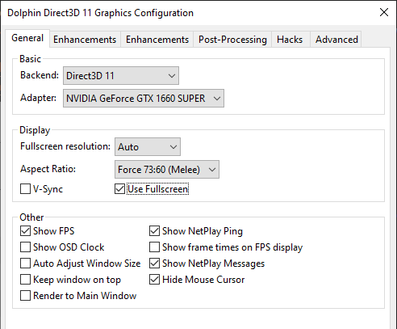
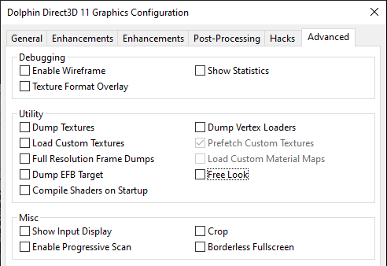
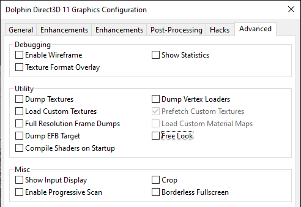
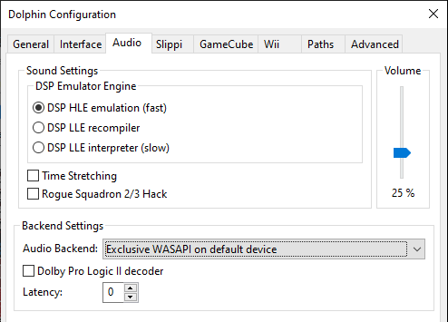
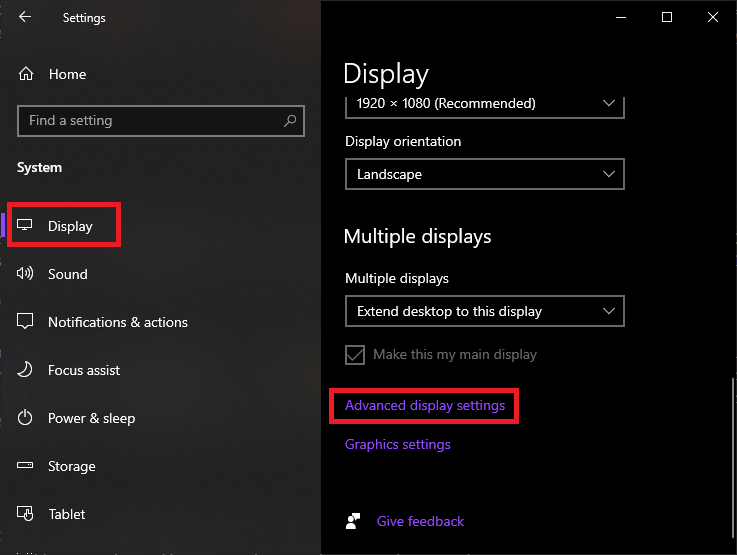
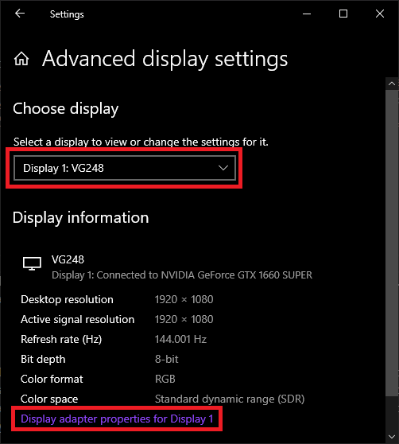
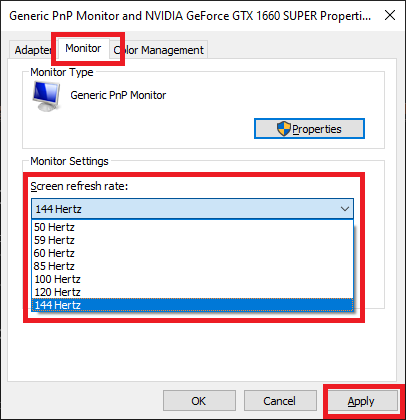

Optimize Slippi Netplay Performance
Optimizing Melee netplay can significantly improve the performance of the emulation, giving you a much closer experience to Melee on a console and CRT setup. Check out Radar's tutorial below, and read below for additional tips.
Mac users: use this guide instead.
Slippi
Graphics Settings
Visit Graphics Settings within Slippi, and start with the General tab. Experiment with video backends between OpenGL and Direct3D 9, 11, or 12. For Direct3D you'll want to utilize your video card if you have one. Set fullscreen resolution to the lowest possible if you're having trouble running the game in full screen. Set aspect ratio to Force 73:60 for Melee, or use Stretch to Window if you choose to use the widescreen Gecko code. Under Enhancements, make sure it's set to 1x for best performance. If you want to enable widescreen, do NOT check the widescreen hack here. Use the Gecko code instead. Under Advanced, make sure Load Custom Textures is disabled, unless your PC can handle loading in custom textures.
 

Audio Settings
Make sure DSP HLE emulation is selected. "Exclusive WASAPI on default device" is the best audio backend choice for performance and lowest latency, but it comes at the cost of being the only audio you can hear. For most users or if it's giving you trouble, Cubeb will work fine at the cost a few frames of audio lag.
Seemingly Unexplained Slippi Performance Issues
If you're having unexplained lag issues, like a consistent framerate in single player, but a slowdown during online play, see if other programs/processes are running. For example, OneDrive is known to cause issues, so completely close anything you don't need running. If you have multiple hard drives, make sure your Slippi install and Melee ISO are on the fastest one you have available (for example, SSD or M2 drive). Something else to check is to see if Windows is compressing the ISO. This will cause issues.
Diet Melee
If you're looking for a lower-poly, less taxing version of Melee to run on your PC, then check out the Diet Melee builds. There are three variants to choose from, all packaged together in a convenient installer. For additional ways to optimize performance while using Diet Melee, check out this document.
Gecko Codes
Check out the Gecko Codes page to discover codes you can add that will improve the game's performance.
Controller
Adapter Polling Refresh Rate
Overclock your GameCube controller adapter and increase your input polling rate. Full written guide by Arte is here. Video tutorial for Windows users by David V. Kimball is here. Mayflash V0.5 firmware link is here.
Monitor
Refresh Rate
You'll want to use a 120Hz (or higher) monitor with your Slippi setup. This will help the game feel as responsive as CRT Melee. Make sure to enable the higher refresh rate with your PC's settings once you have the monitor connected. In Windows 10, go to Settings, System, Display, and then click "Advanced display settings." Select the correct display if there's more than one, and click "Display adapter properties for Display X, go to the monitor tab and select the higher refresh rate, either 120Hz or higher.
  NVIDIA Graphics Settings on Windows
Go to NVIDIA Control Panel, 3D Settings > Manage 3D Settings, then add Slippi (Slippi Dolphin.exe) by browsing your PC for the executable. Note: if there are multiple Dolphin Emulators on the list, make sure you're selecting the version you use for Slippi. For Low Latency Mode, set it to On from the list of features. Power management mode should be set to Prefer maximum performance. Triple buffering and Vertical Sync should both be set to off. Provided you have an NVIDIA graphics card, the latest version of GeForce Experience, and the latest drivers, these options should be available to you. You can also try using G-Sync or Freesync with a compatible monitor if you have one.

Internet
Always use a wired / Ethernet connection to play Slippi online. Do not rely on a WiFi connection. No matter how good your router is, it will never have the consistency of a wired connection.
Ethernet Adapter
Here are some Ethernet adapter optimization tips by Tim Ellison.
PC Build
See Kadano's SSBM Netplay / Slippi Setup Value Build + minimal audio lag guide if you're looking to build the cheapest PC you can to run Melee.